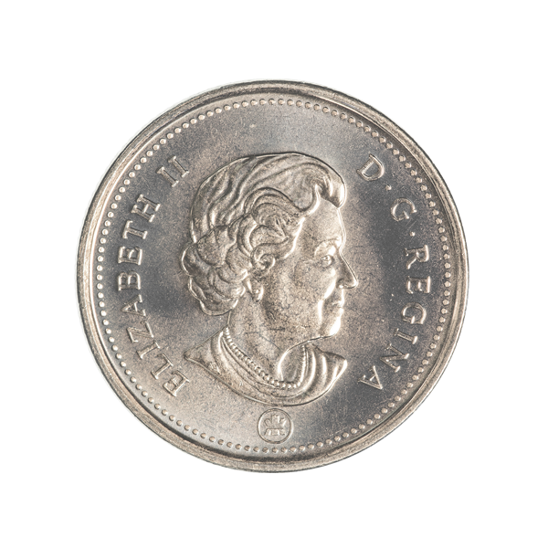
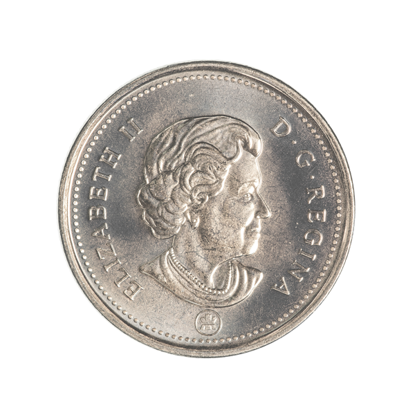

Чупакабрас
Артикул: 380211-057
На аверсе монеты изображено озеро Байкал, выполненное в цвете. В нижней части надпись — год чеканки 2017.
На аверсе вверху полукругом название серии: MOUNTAINS & FLORA, ниже изображены горы, произрастающие на альпийских лугах цветы (нанесенные методом тампонной печати).
Чистая байкальская вода, насыщенная кислородом, издавна считается целебной. Байкал является хранилищем 20% мировых и 90% российских запасов пресной воды.
Цена: 2 790 ₽
| Год | 2003 |
| Номинал на монете, ед. нац. валюты | 5 Доллар Кабра |
| Страна эмитент | Республика Кабра |
| Качество чеканки | PR |
| Металл | Серебро 925 проба |
| Масса хим. драгоценного металла в монете, гр | 52 г. |